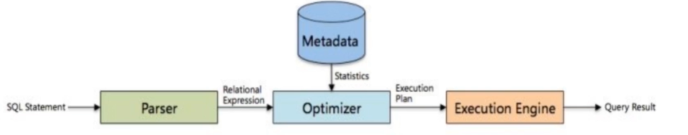
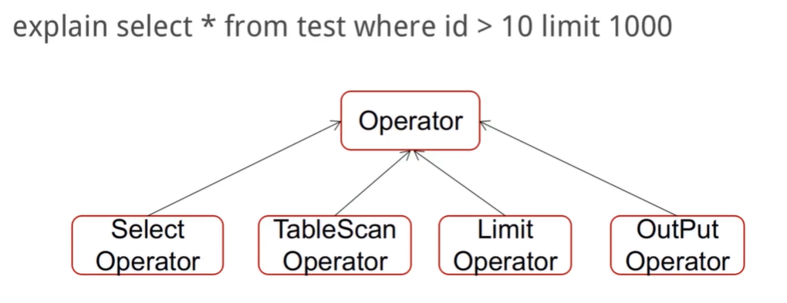
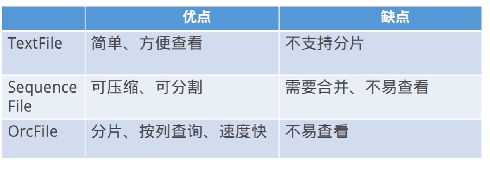
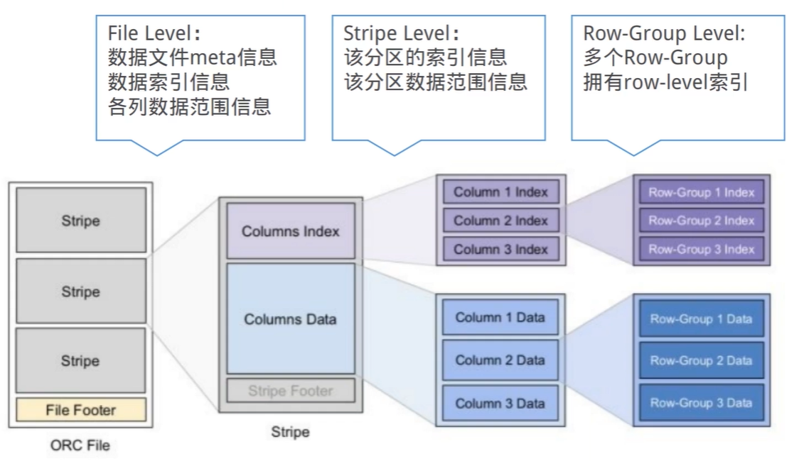

一句话描述Hive
Hive是一个构建在Hadoop之上的数据仓库软件,它可以使已经存储的数据结构化，它提供类似sql的查询语句HiveQL对数据进行分析处理。
Hive将HQL转换为MapReduce的流程
1、Antlr定义SQL的语法规则，完成SQL词法，语法解析，将SQL转化为抽象语法树AST Tree
2、遍历AST Tree，抽象出查询的基本组成单元QueryBlock
3、遍历QueryBlock，翻译为执行操作树OperatorTree
4、逻辑层优化器进行OperatorTree变换，合并不必要的ReduceSinkOperator，减少shuffle数据量
5、遍历OperatorTree，翻译为MapReduce任务
6、物理层优化器进行MapReduce任务的变换，生成最终的执行计划
Hive与关系数据库Mysql的区别
1、产品定位
Hive是数据仓库，是为海量数据的离线分析设计的，不支持OLTP(联机事务处理)所需的关键功能ACID，而更接近于OLAP(联机分析技术)，适合离线处理大数据集；
而MySQL是关系型数据库，是为实时业务设计的。
2、可扩展性
Hive中的数据存储在HDFS(Hadoop的分布式文件系统)，metastore元数据一般存储在独立的关系型数据库中，而MySQL则是服务器本地的文件系统；因此Hive具有良好的可扩展性，数据库由于ACID语义的严格限制，扩展性十分有限。
3、读写模式
Hive为读时模式，数据的验证则是在查询时进行的，这有利于大数据集的导入，读时模式使数据的加载非常迅速，数据的加载仅是文件复制或移动。MySQL为写时模式，数据在写入数据库时对照模式检查。写时模式有利于提升查询性能，因为数据库可以对列进行索引。
4、数据更新
Hive是针对数据仓库应用设计的，而数仓的内容是读多写少的，Hive中不支持对数据进行改写，所有数据都是在加载的时候确定好的；而数据库中的数据通常是需要经常进行修改的。
5、索引
Hive支持索引，但是Hive的索引与关系型数据库中的索引并不相同，比如，Hive不支持主键或者外键。Hive提供了有限的索引功能，可以为一些字段建立索引，一张表的索引数据存储在另外一张表中。由于数据的访问延迟较高，Hive不适合在线数据查询；数据库在少量的特定条件的数据访问中，索引可以提供较低的延迟。
6、计算模型
Hive使用的模型是MapReduce(也可以 on spark)，而MySQL使用的是自己设计的Executor计算模
Hive的数据有哪几种存储格式
Hive中的数据存储格式分为TextFile、SequenceFile和RCFile三种，其中TextFile是默认的存储格式，通过简单的分隔符可以对csv等类型的文件进行解析。而ORCFile是我们常用的一种存储格式，因为ORCFile是列式存储格式，更加适合大数据查询的场景。
Hive的表存储模型有哪些，谈谈分区分桶的作用
Hive几种基本表类型：内部表、外部表、分区表、分桶表。
内部表：内部表的数据，会存放在 HDFS 中的特定的位置中，我们在安装Hive的配置中是在/hive/warehouse。；当删除表时，数据文件也会一并删除；适用于临时创建的中间表
外部表：适用于想要在 Hive 之外使用表的数据的情况．当你删除 External Table 时，只是删除了表的元数据，它的数据并没有被删除。适用于数据多部门共享。建表时使用create external table。 指定external关键字即可。
分区表：分区表创建表的时候需要指定分区字段，分区字段与普通字段的区别：分区字段会在HDFS表目录下生成一个分区字段名称的目录，而普通字段则不会，查询的时候可以当成普通字段来使用，一般不直接和业务直接相关。
分桶表：将内部表，外部表和分区表进一步组织成桶表，可以将表的列通过Hash算法进一步分解成不同的文件存储。
对于内部表和外部表的概念和使用我们很容易理解，我们需要重点关注一下分区表和分桶表。我们为什么要建立分区表和分桶表呢？HQL通过where字句来限制条件提取数据，那么遍历一张大表，不如将这张大表拆分成多个小表，并通过合适的索引来扫描表中的一小部分，分区和分桶都是采用了这种理念。
分区会创建物理目录，并且可以具有子目录(通常会按照时间、地区分区)，目录名以=创建，分区名会作为表中的伪列，这样通过where字句中加入分区的限制可以在仅扫描对应子目录下的数据。通过partitioned by(field1 type,…)
分桶可以继续在分区的基础上再划分小表，分桶根据哈希值来确定数据的分布(即MapReducer中的分区！)，比如分区下的一部分数据可以根据分桶再分为多个桶，这样在查询时先计算对应列的哈希值并计算桶号，只需要扫描对应桶中的数据即可。通过 clustered by( field ) into n buckets
分区和分桶都是为了提高查询效率。
Hive有哪几类自定义函数
UDF：普通的用户自定义函数。接受单行输入，并产生单行输出。如转换字符串大小写，获取字符串长度等
UDAF：用户定义聚集函数（User-defined aggregate function）。接受多行输入，并产生单行输出。比如MAX，COUNT函数。
UDTF：用户定义表生成函数（User-defined table-generating function）。接受单行输入，并产生多行输出（即一个表），不是特别常用
提交一条SQL到Hive后，Hive的执行流程是怎样的？

SQL Statement：SQL语句
Parser：解析器
Relational Expression：关系表达式
Optimizer：优化器
Metadata：元数据
Statistics：统计
Execution Plan：执行计划
Execution Engine：执行引擎
Query Result：查询结果
1、将SQL提交给了解析器。
2、解析器根据SQL生产抽象语法树，同时与元数据进行交互生成逻辑执行计划。
3、优化器对逻辑执行计划进行优化，最终生成物理执行计划交给执行引擎进行执行。
延申：一条具体的SQL执行计划

解析器会把这个SQL解析成一个个operator(hive解析后的最小单元、一个operator对应一个MR的执行任务)，Hive实现了优化器对这些operator的顺序进行优化，提高查询效率。
优化器总类
- RBO(Rule-Based Optimizer)：基于规则的优化器
根据已经制定好的优化规则对关系表达式进行转换，最终生成一个最优的执行计划。 - CBO(Cost-Based Optimizer)：基于代价的优化器
根据优化规则对表达式进行转换，生成多个执行计划，根据我们的查询信息和代价模型，从中挑选一个代价最小的执行计划作为最优执行计划。
动态CBO：在执行计划生成的过程中动态优化的方式【Hive优化器方式】
数据倾斜调参
hive.map.aggr
hive.groupby.skewindata
Join方式、空值、大小表Join(小表放左边)
Hive的存储格式

OrcFile存储格式详解

Orc VS Parquet
1、OrcFile和Parquet都是Apache的顶级项目。
2、Parquet不支持ACID、不支持更新，Orc支持有限的ACID和更新。
3、Parquet的压缩能力较高，Orc的查询效率较高。
Hive查询时有哪些优化项，列举一下
SQL：
-指定查询列，少用select *
-善于用分区键进行检索
-小表join大表 减少shuffle操作
-小文件合并